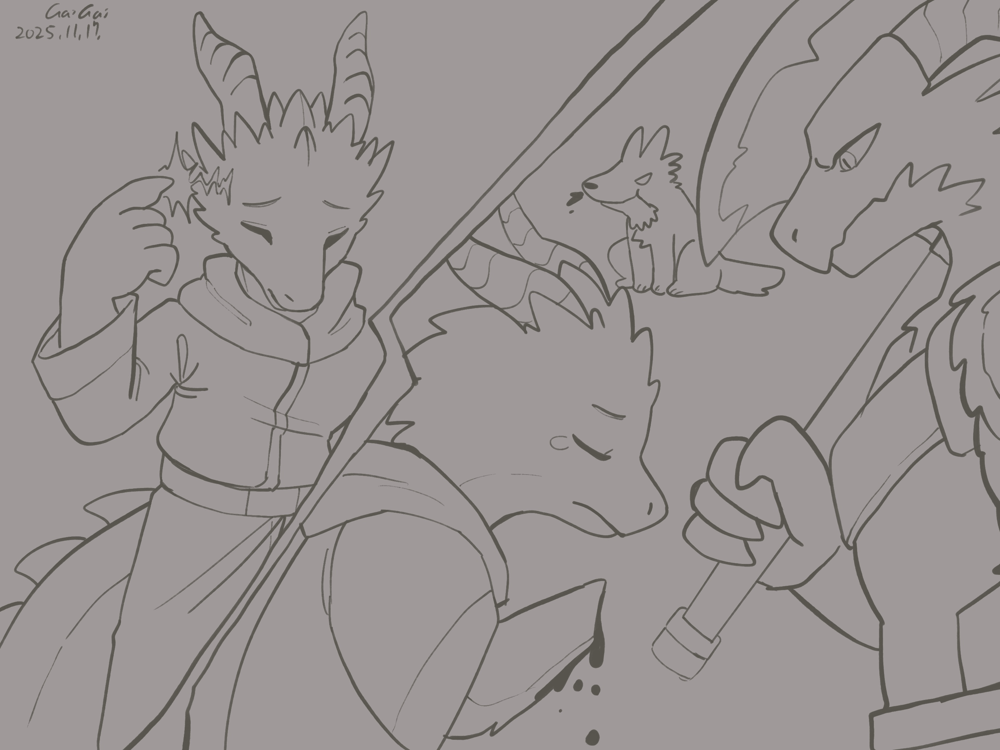

Chapter 4: Eternal Lost of the Dragonborn Vein
Heir to Rathanad

Heir to Rathanad
15049.05.03
拉撒拿的山丘頂端，Theramond 壓著 Nylessa 的肩膀，面對著全鎮的目光；雙手握著巨斧的 Serathe 眼神黯淡，站在一旁；Vaelric 絕望的眼神看著他即將死去的姊姊；Enelmor 則在人群中遠遠望著。阿龍眼看著他的新家人，躊躇著下一步。
「Nylessa，你有什麼遺言嗎？」代理龍冠對著自己的小女兒，用著近乎沒有感情的語氣，低沉地說出。鑰試著阻止這場人倫悲劇，但依 Theramond 的說法，「身為龍冠，就算是家人，還是必須做該做的審判，否則拉撒拿的人們不會信他們的。」
「弟弟，世界這一塊畫布，就留給你自己發揮了。」Nylessa 低聲說著。「你那麼聰明，我相信你一定可以畫得比我好，不會和我一樣犯下這麼衝動的錯的。」
阿龍試圖衝到處刑場中央，但在他一旁的另一個身影比他更迅速。Maribel 噙著眼淚，抱著 Nylessa。「不可以這樣……」他哽咽著。「失去家人的痛苦，是無法復原的。」阿龍對此心情極度複雜。畢竟，Nylessa 也是因為殺死他的父母，才要被處刑—但當然，如果他們有能力，真正該負罪的罪魁禍首，是那頭該死的銀龍。
「這是龍冠的責任。」Theramond 再次重申。「否則，拉撒拿的人民，將不再相信正義。」Theramond 轉頭看向阿龍。「在這之後，我就會把龍冠交給你了。」
「那我能以未來的龍冠，來主持這場審判嗎？」阿龍面向 Nylessa，從 Serathe 手上接過巨斧。「唰！」的一下，他砍下 Nylessa 的右手，鮮血直流。
「Vaelric，你還能施法嗎？」Vaelric 從人群中走出，流著淚，點了點頭。「對你姊姊施法吧，讓他……認為他殺死的是自己的父母。」Vaelric 呆呆地看著地板。
「對不起，但我已經決定好我要怎麼用這個魔法了。」Vaelric 將手指著自己的腦袋。「我不生存在這個家庭，我不是貴族，Arylith 不是我的姓氏。」一道金光籠罩他的頭，Vaelric 倒在地上，昏厥了。
阿龍對此感到詫異，但也有些憤怒。他將 Nylessa 朝著山丘下方推了一把。「Nylessa Arylith，我以未來龍冠的身份，在此將你從拉撒拿驅逐出境，永世再也不得踏入這裡一步。同時，我也要剝奪你的姓氏，從今以後，你再也不是 Arylith 了。」
Nylessa 落魄的向前走，拉撒拿的人民朝著左右散開，讓他留有最後的尊嚴。Nylessa 的身影在阿龍的眼中越來越小，越來越遠。
Theramond 將頭頂的王冠摘下，輕輕放在阿龍頭上。「Cyrinel，現在你是龍冠了。」語畢，他看向遠方山上的翠綠草地，慢慢走著。雷雅想起在土城發生的悲劇，趕緊追了上去，深怕 Theramond 要了結自己的生命。他看著 Theramond 在草皮上坐了下來，繼續眺望著遠方山丘的草地，雷雅也坐了下來。他分享了自己不曾見過的父母的故事，說著自己在這段冒險過程中的成長，也讓 Theramond 知道新任龍冠在這段冒險期間的成長。
同一時間，Enelmor 默默走向成為龍冠，接下 Arylith 姓氏，正名為 Cyrinel 的阿龍。「你的母親有話留給你。」他看著 Cyrinel 的眼睛。「Cyrinel 這個名字的意思，是『歸來的王子』。」
Cyrinel 看向遠處的叔叔和雷雅，默默走了過去。雷雅起身，與 Cyrinel 擦身而過。Cyrinel 和叔叔聊了一會兒，兩人肩並著肩，默默看著遠方，直到 Cyrinel 意識到他得在日落前去見那頭銀龍。
銀龍的洞前，冒險者們一行人抱持著複雜的心情，踏了進去。Myz’haril 坐在熟悉的餐桌一端，桌上擺著豐富的佳餚。Cyrinel 坐在他的對面，其他人則各自找了位子坐下。
Myz’haril 首先恭喜 Cyrinel 成為新任龍冠，並詢問他在這場遊戲中得到什麼收穫。句句充滿戲謔與嘲諷的話惹的 Cyrinel 怒氣滿滿，但基於對方太過強大，他也無法出手。
Cyrinel 試圖和 Myz’haril 談條件，贏得這場「遊戲」，除了那支權杖外，還能有什麼收穫？但 Myz’haril 也只笑笑，畢竟身為遊戲的主持人，他不願意給的，要不得。
接著，Myz’haril 看向雷雅。「說起龍人，你們這裡除了你以外，還有一頭龍人。不過，應該說是半個龍人吧？混雜了其他族的血液，如此骯髒。雜種。」雷雅一聽，怒氣滿滿。但對於他的父母，他知道的也僅有來自他的師父所說的話。「依我所知，我的出生，是兩個城鎮『和平』的象徵。」
「哼，『萊斯諾』，這個地名你認得嗎？」Myz’haril 戲謔地看向雷雅。「還是說……你連你的家鄉都認不得？」他輕笑了一聲。「回去萊斯諾吧，還是……你根本不知道怎麼回你的『家』？我的一隻小鳥告訴我，有人在那裡等你。好好享用這餐，你們接下來的路可難走了。」
洞穴外的夜色很黑，雨綿密的落下。拉撒拿的人們在目睹一場悲劇的同一天，也迎來了新任的龍冠。
酒館內，Cyrinel 被人民們擁簇著喊著「龍冠」，酒館老闆也識相的請所有人喝酒。雷雅則無法平息心中的怒氣。Cyrinel 走向 Old Nixul，加入他的酒桌，喝醉的 Old Nixul 開心的慶祝著 Cyrinel 的晉升。
此時，一個身影站在他們的身後，一名年輕的女性龍人向 Cyrinel 自我介紹。他自我介紹名為 Ilyra Valecrest，是這裡的記者。他邀請冒險者們來到酒館的包廂內，讓他進行採訪。
Ilyra 詢問冒險者們這次的事件與他們解決的方法，同時也採訪了新任的龍冠 Cyrinel。過程中，他也再三告誡有些東西是不能寫在報紙上的。最後，他詢問了冒險者們他們的團體名稱。
「我們是『中途之家』。」
採訪結束，雷雅悶悶地走出了酒館，鑰和毛毛從後方跟上。雷雅到了稍早 Theramond 和他一起坐著的草皮。「混血……錯了嗎？」夥伴的陪伴與關懷，暫時讓他內心緩和了許多。雷雅閉上雙眼，在心中默想涅西斯，鑰和毛毛看見他身上發出柔和的綠光，雷雅的神情穩定了許多。
Green 將馬車牽到 Arylith 在山坡上的房子時，灌了好多杯酒的 Maribel 向 Cyrinel 示了意，兩人一起走到酒館外。Maribel 突然抱住 Cyrinel 的腰，大力地哭泣。「這段時間我一直忍著自己的傷心，現在你失去了父母……會不會你也能懂我的痛苦？」Cyrinel 嚇了一跳，試圖安撫 Maribel，也說著自己內心的想法。「之後我不會再哭了。」Maribel 擦了擦眼淚。「這個，是我這段時間每天寫的，我可以靠寫東西來消化自己的傷心。現在，我不需要了。」Maribel 把平常拿在手上的小日記本遞給 Cyrinel。「但是如果我需要靠他來施魔法，你要記得還我喔。」語畢，Maribel 便走回酒館包廂內。
Cyrinel 找了附近的光源，靠著 Myz’haril 給他的權杖，試著翻閱 Maribel 寫的日記。從他父母出差離開土城開始，一路到今天稍早的紀錄，Maribel 在他失去父母前後，有很大的性格變化。而最後一頁，甚至還有 Maribel 對夥伴們的性格分析。
15049.05.04
武器的敲擊聲劃破了早晨，Cyrinel 醒來，看見 Serathe 正在庭院拿著武器練武。Serathe 看了看 Cyrinel，示意他加入。很明顯地，Serathe 的狀況很差，完全沒有昔日威風的氣勢，甚至武器一直掉到地上。
Serathe 邀請 Cyrinel 到他的房間，讓他拿走一把武器，作為他上任龍冠的禮物。Cyrinel 挑了昨日處刑的巨斧，上面除了還沒清洗的血跡，還有 Arylith 家的家徽。Serathe 點了點頭，將手放在巨斧上，發出了亮光，不會魔法的 Cyrinel 也能感受到這股魔力。
Arylith 宅邸外，中途之家的成員們已經整裝好，準備繼續下一段旅程。Enelmor 將大家領到馬廄，讓每個人挑選一匹馬。
「在我們的習俗，大家都要幫馬取名字，有了名字，就是冒險的夥伴。」
拉撒拿的城外，Green 與中途之家揮手道別，但喬里森的祝福，會伴隨著大家前行。